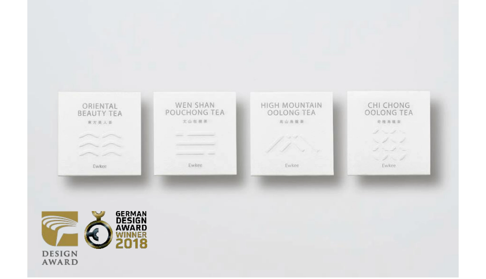

食・農
有記名茶

PROJECT INFORMATION
台湾の有記名茶。新ブランドの制作とパッケージデザインを担当した実績です。
01 / 背景とテーマ
輪郭を与える
台北・大稻埕で百年続く老舗茶商が立ち上げた新ブランド。歴史の重みを守りながら、いまの生活の中に置ける茶にすることが課題でした。
02 / SCHEMAの担当範囲
全体を整える
SCHEMAは新ブランドの制作とパッケージデザインを担当。茶の種類ごとの違いが、箱の面と文字の組みだけで伝わる形に整えています。
03 / 取り組みの視点
枠組みをひらく
伝統を装飾で語らず、選ぶときのわかりやすさに変換する。金點設計獎 Golden Pin Design Award 2016、German Design Award 2018 を受賞しました。